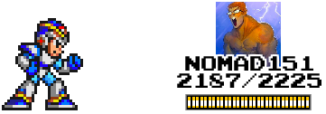

|
XBOSS
Custom megaman themed bitboss widget- Fully implements rules of the regular bitboss widget - Boss image replaced with boss defeater's avatar - - If user has no avatar, can place custom image (in this case, it just uses Caleb's) - Custom animations - - Idle blink animation - - Dynamic attack animation - - - Shoots exact # of bits donated - - - Each bit is fully simulating physics/collision (not prebaked!) - - - Bit type dependent on bit range donated - - - Collision against boss pushes boss back - - Death/takeover animation - - Death Sound plays on takeover - - Custom health bar - - "Exhausted" animation when boss at < 25% health - Queues up multiple simultaneous donations, ensuring each donator gets a full shot/display - Local saving of current boss/hp/etc.. (cookies), remote saving (my server), or both, or neither - Chat commands that only listen to whitelisted set of users - - "xboss setuser phildo3" - sets current boss based on username - - "xboss sethp 123" - sets hp - - "xboss setvol 0.1" - sets volume of death sounds - - "xboss RESET" - clears current boss (both locally and on server) - - "xboss shoot 12345" - simulates a donation of that many bits - - "xboss anim 5" - plays specified animation (all animations are given a number value) - Plain old javascript- loads fast, no plugins necessary - Just actually works. No bugs you're just expected to shrug off/deal with. (if any ever do come up, I'll make sure it's fixed asap) - Jumps whenever anyone in chat says "jump" (lol) |
Screenshot:  Vid:
In this video: 1. Small donation 2. Medium donation that brings health below 25% 3. Medium donation that kills boss 4. Large donation that heals
In stream: |